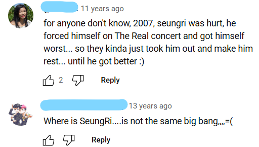

2007年12月
2007年12月，Hot Issue专辑的Last Farewell在Cyworld Digital Music Awards上获得"Song of the Month"奖项
点击这里进入获奖详细资讯：Cyworld
Credit: lanladay @ YT
2007年12月1日
Five Live 泰国采访视频
- 唱Lies
2007年12月1日
Human Rights Day Love Concert
唱Lies
2007年12月1日
Human Rights Day Love Concert
唱Last Farewell
2007年12月1日
Virgin Hitz Award 2007
- TeroRadioChannel播出
- 第一个视频唱Lies
- 第二个视频唱La La La
- 第三个视频唱Shake It
2007年12月1日 Love Concert
Last Farewell
下面的视频来自 Bilibili 点击观看完整版
2007年12月2日播出
没有不可能 第一集
- TOP个人嘉宾
- 牙齿被磕掉了
下面的视频来自 Bilibili 点击进入观看完整视频
2007年12月3日
Keywui.com的采访
- 有中字
2007年12月3日
MTV Fast forward, Thailand
- 泰国采访视频
外网的科普网站很喜欢用这张图片（很出圈）
下面视频来自 @BIGBANGTHAILAND站子
2007年12月3日
Thailand (V) Play Zone by Fanta采访
- 泰国采访视频
- 清朝画质，泰语，无中字
- 前三个视频是正经采访
- 第四个视频唱Lies
- 第五个随机打电话给当地泰国粉丝
下面的视频来自 Bilibili 点击观看完整版
2007年12月7日
MELON采访
Bigbang在8th MBC Korean Visual Arts Festival获得"Male Singer Photogenic Award"奖项
点击这里进入获奖详细资讯：Wordpress
2007年12月7日 TVPP Korea Visual Art Festival
Last Farewell
- 获得"Male Singer Photogenic Award"奖项
2007年12月8日
SatZone Interview
- 泰国采访视频
2007年12月8日
TOP主持开幕，其他成员入境
开场前GD一直在摸胜利，视频在专区
下面的视频来自YouTube @880818gd0
2007年12月9日
WakeClub
- 泰国采访视频
下面的视频来自 Bilibili 点击观看完整版
2007年12月9日播出
没有不可能 第二集
- TOP个人嘉宾
- 牙齿被磕掉了
下面的视频来自 Bilibili 点击进入观看完整视频
2007年12月9日
- 奇迹的胜负师
- 有中字
- GD和胜利做嘉宾
下面的视频来自 Bilibili 点击进入观看完整视频
2007年12月10日
朴俊亨的人气歌谣
04:16 Bigbang的可爱李胜贤庆生（应该是GD给的）
04:23 "胜利啊我爱你"
- 00:05 Lies
- 17:25 Last Farewell
- 21:04 Always
下面的视频来自 Bilibili 点击进入观看完整视频
2007年12月14日
Aha采访频道
- 走红毯
Lies在Golden Disc Awards上获得"Digital Bonsang"奖项（有领奖视频cut）
在"Digital Daesang"则是被提名而已
点击这里进入获奖详细资讯：Cyworld
2007年12月14日
Golden Disk Awards
- 第一个视频是唱Last Farewell
- 第二个视频是Last Farewell彩排
- 第三个视频是太阳的粉丝站子From YouTube by @juckdo
上面两个视频是Bigbang颁奖cut
获得"Digital Bonsang"奖项，另一个"Digital Daesang"项目被提名而已
在这个颁奖典礼上，胜利在彩排中脚踝受伤，但仍坚持参加颁奖典礼，结果错过了和TOP大声一起出演
12月29日是第二场The Great Concert演唱会，胜利的脚踝状况恶化，再加上被烟花炸到后，直接晕倒在现场被紧急送往急诊室
12月30日第三场也就是最后一天，他恢复了一点就继续参加演唱会
12月31日，胜利就可以活蹦乱跳出席打歌舞台了
莉生莉，你真的....简直是打不死的小强
点击这里：演唱会受伤具体细节
2007年12月15日
TOP主持 MBCkpop Music Core的开幕
- GD太阳推蛋糕进场
2007年12月15日 MBCkpop Music Core
GD TOP 大声唱You in the fantasy徐太志和孩子们
- 胜利缺席，GD顶替胜利
2007年12月15日 MBCkpop Music Core
GD 太阳唱Look back at me (DEUX)
2007年12月15日
TOP主持 MBCkpop Music Core的闭幕
- 胜利缺席
下面的视频来自 Bilibili 点击进入观看完整视频
2007年12月18日
音乐空间
- 04:30 h片梗
还有一个打歌舞台：Dirty Cash + Last Farewell
和两只视频是GD饭拍视频
2007年12月28日参与 KBS Music Bank
Tell Me经典舞台（最乱的那个）+ Lies
先解释为什么舞台那么乱，再来笑：
这天是The Great Concert的第一天，下午打歌舞台晚上演唱会
这个舞台是临时上去的，走位也是临时排的（VI YG）
逐帧看笑点：
- 00:00 GD一上来站位就错了
- 00:14 TOP和胜利说悄悄话
- 00:17 胜利疑似话筒没声音
- 00:23 除了胜利在唱歌，其他四个人在划水
- 00:43 大声被推着走哈哈哈哈
- 00:55 胜利忘记动作，偷瞄别人
- 01:37 为什么突然拥挤起来，GD直接被挤出来找不到方向了
- 02:05 爱心比错了
- 02:17 TOP忘记动作直接僵在原地哈哈哈哈哈哈
下面的视频来自 Bilibili @小猪搞快跑
2007年12月28日
The Great Concert第一天
演唱会持续三天（28-30日）在韩国首尔
- 08:45 这一段胜利没有被烟花炸伤（是第二天29号且没有官拍演唱会）
点击这里：具体细节
我觉得不关龙特的事情，是分析胜利被炸伤后发生的一乱串的事 - 14:33 胜利弹琴和大声唱 试着微笑
- 20:35 胜利弹琴唱 第二天
- 36:32 咖啡王子一号店的恶搞版，名字叫：咖啡王子二号店
2008年2月27日发行音源专辑
下面的视频来自 Bilibili 点击观看完整版
The Great Concert三天的花絮（28-30日）
- 09:18 咖啡王子二号店的花絮（咖啡王子一号店的恶搞版）
- 12:58 胜利kawaii
- 28:43 胜利被烟花炸伤片段
- 龙tory细节在专区
标注：GDTOP百度知道团队
2007年12月28日
咖啡王子二号店
- 是咖啡王子二号店的恶搞版（Bigbang自己改名字的）
- 有中字
- 是在The Great Concert播出的
2007年12月28日参与 MBC One Love Concert
- Crazy Dog
- 胜利受伤了，所以缺席

谁懂我在2025年看到这两条评论的感受啊..莉粉心里暖暖的
左边TOP主持开幕，右边TOP主持闭幕
2007年12月29日
SBS Gayo Awards和YG Family一起
胜利被烟花炸伤，所以缺席
下面的视频来自YouTube @880818gd0
2007年12月30日
MTV Asian Delight采访视频
下面的视频来自YouTube @WGbackthen
2007年12月30日
和Wonder Girls演的音乐短剧
2007年12月31日 MBC Gayo Festival
他们在演戏 + 唱歌吧（？）和Wonder Girls
胜利满血复活，轮到TOP不见了
下面的视频均以来自YouTube
2007年12月31日
YG One Concert采访视频
胜利拿着气球（好可爱！！！）
- 第一个视频是演唱会彩排上放图片
- 第二个视频是唱BIGBANG @IVIPmon5482
- 第三个视频是唱We Are The Champion（泪目）@ball00nz
2007年
拍摄花絮
- 00:40 熊猫叫